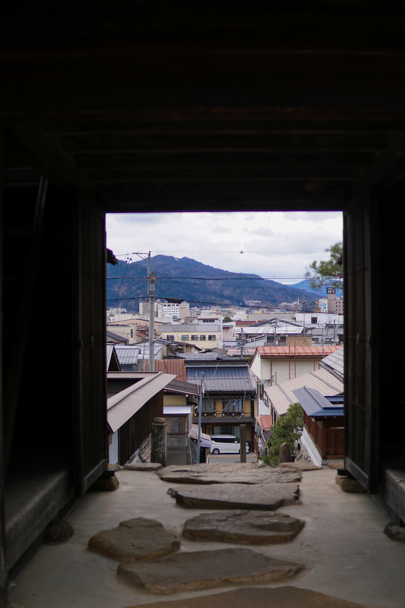
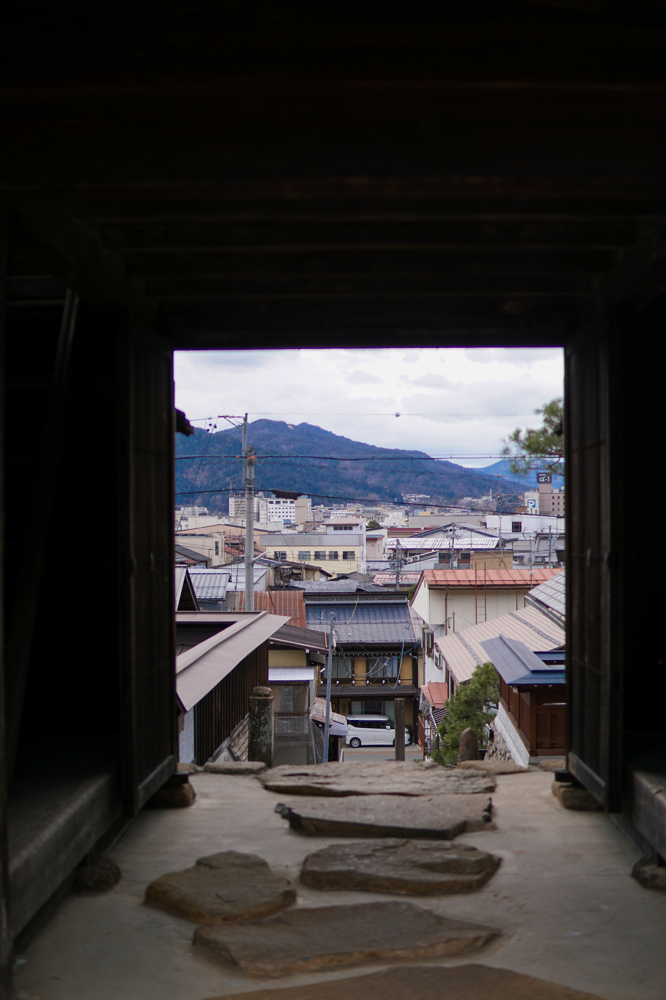

Kyoto - Japan 2019
About:
While traveling through Kyoto, Japan in 2019, I was inspired by the landscape and the historical attractions. This was something I wanted to remember and capture. With these photos, I got some experience with editting in Adobe Lightroom.
 
